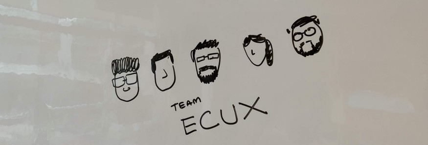
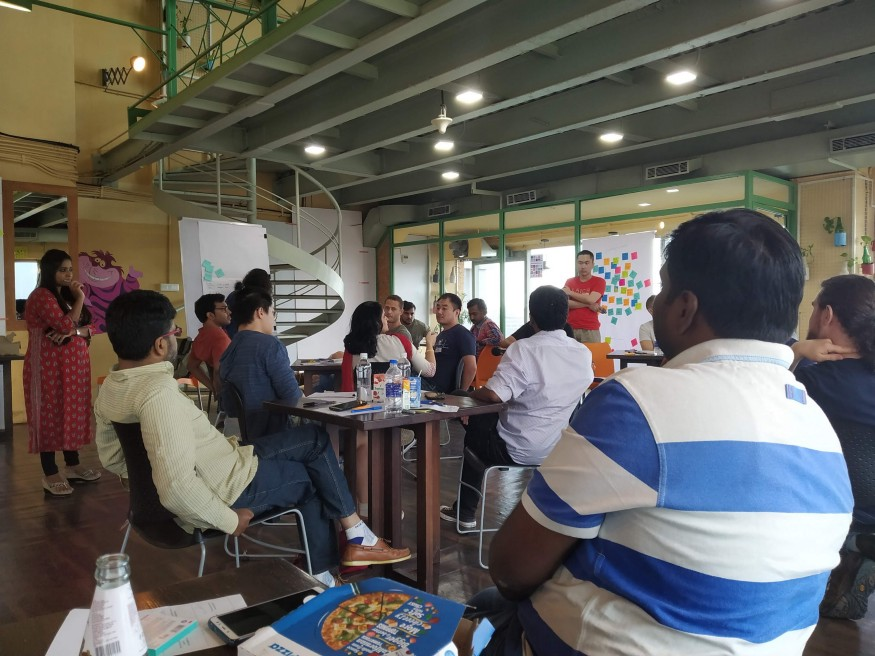
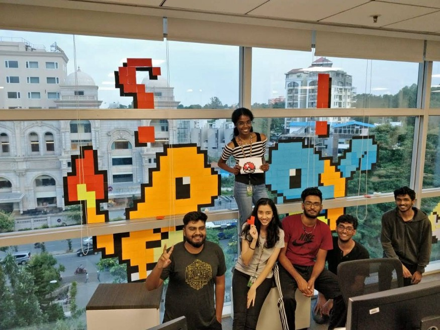
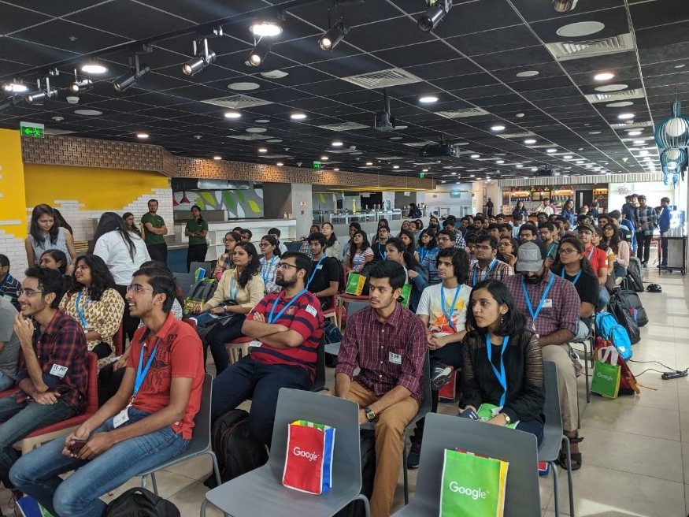

Pre-interview assignment
My work from the internship is under an NDA, but here is the pre-interview assignment that I worked on.
View assignmentMy experience
Overview.
The summer of 2019 was 20 weeks worth of things to do packed into 10 - My project with the G Suite team, participating in design sprints, winning a post it art contest B), learning from other brilliant designers and researchers and from my fellow interns! But every bit of those busy ten weeks have been extremely rewarding. What follows are parts of the experience that really stood out.
Multidisciplinary exposure.
A lot of my college projects have looked like this: A design student, working under the guidance of a design professor and also taking regular feedback from design student classmates and seniors. We do manage to get feedback from field experts and users when required, but their involvement remains minimal and given the constraints of the academic setup, they are not heavily invested. However, through the projects that I worked on at Google, I got a chance to collaborate not just with designers but with product managers and engineers across different teams. Each of them had a different and valuable viewpoint of looking at the product — discussions with them made me more sensitive to their point of view to eventually make a better end product.
Primary project.
I designed a feature for the Admin Console of G Suite pose studying existing user journeys and identifying gaps. The Admin Console is a large product, and I collaborated with the 8 sub-teams that own parts of it to create my final mocks. After multiple iterations, user feedback was taken on the mocks and a future scope was established. I also got a chance to participate in initial discussions about the development of the feature, which was a fitting end to the internship :)
Secondary project.
I contributed in a design sprint to help ideate product directions for an upcoming app with a team which included designers, engineers, product managers, engineers and members of the marketing team. Through the sprint, I got a chance to lead ideations with groups of users, conduct one on one interviews and ideate flows that were tested with users.
People.
The people. The environment at Google had made the option of borrowing a colleague’s time was only an email away. They were happy to answer questions related to their project, their careers or the design industry in general. This made the place a lot more welcoming and made it easy to get imbibed in the culture and grow as a designer.
 The internship was an amazing experience where I got to learn a lot from the work and the people. The project helped me understand the parts of the design process that I need to work on more. I think my main takeaways from the internship was learning how to document, communicate and collaborate effectively!